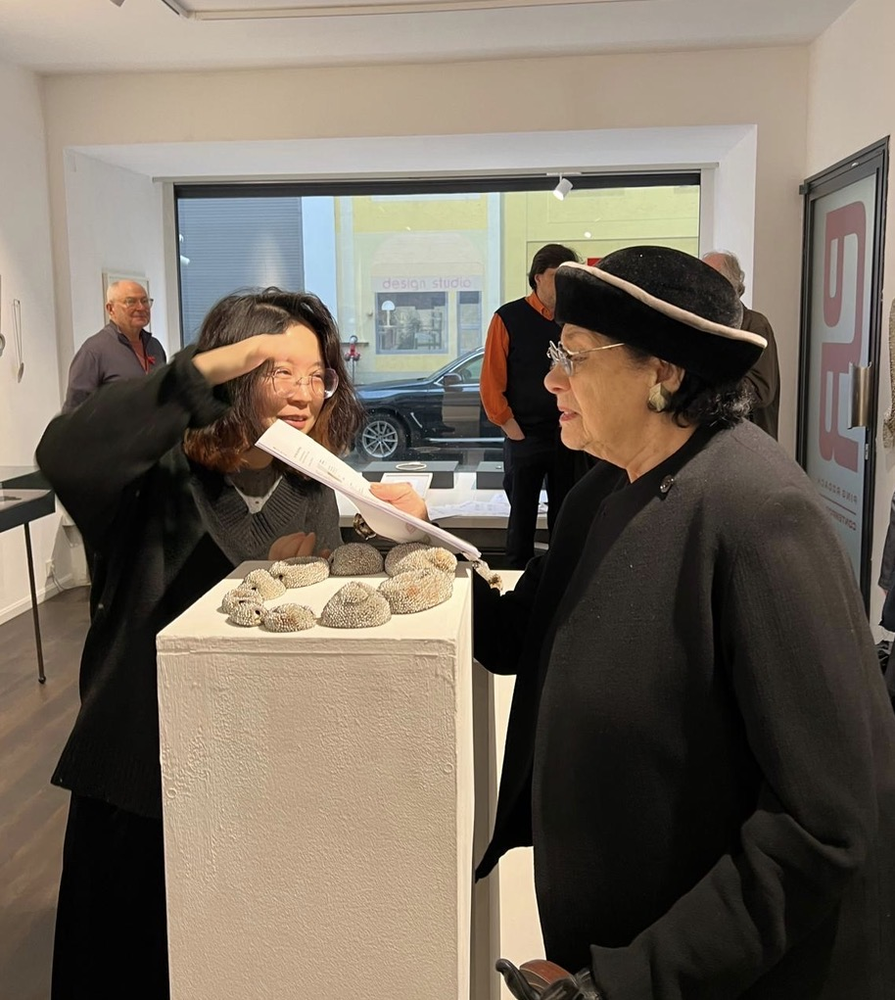
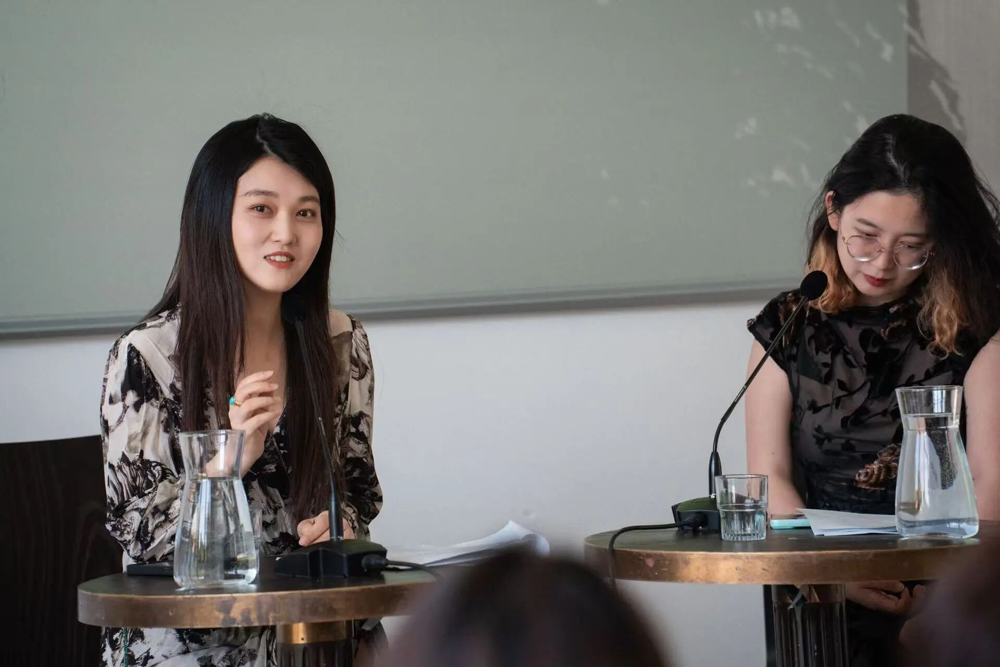
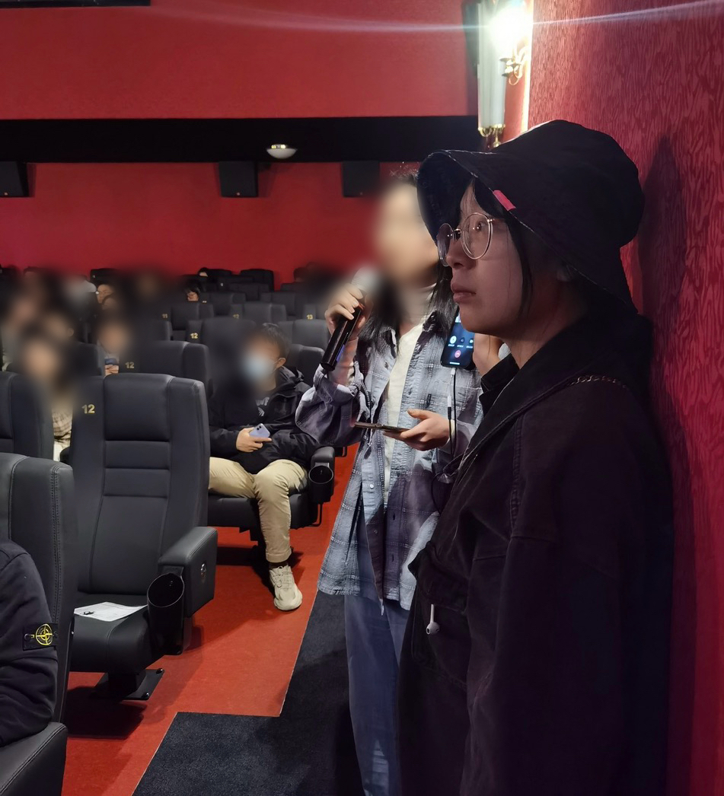
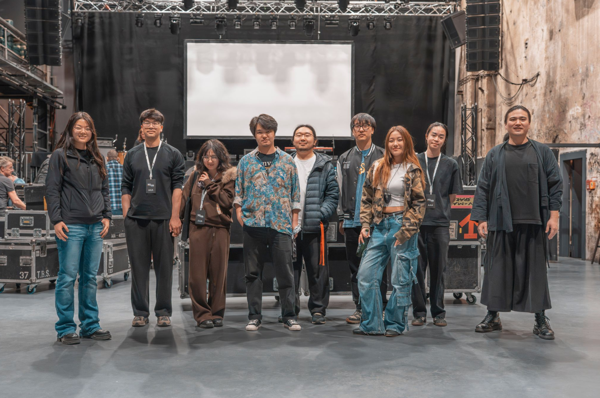
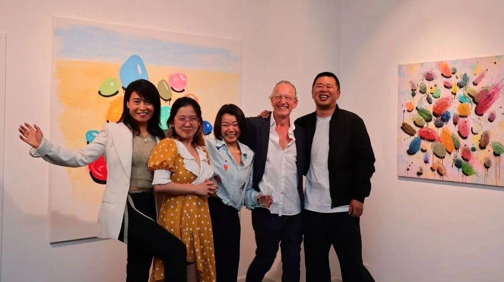

Übersetzung &
interkulturelle Kommunikation
Translation &
Intercultural Communication
Übersetzung verstehe ich als eine Form interkultureller Verknüpfung: Sie schafft Beziehungen zwischen Wissen, Erfahrung und ästhetischen Vorstellungen unterschiedlicher Kulturräume. I understand translation as a form of intercultural connection: it creates relationships between the knowledge, experience and aesthetic ideas of different cultural spheres.
Übersetzen, Dolmetschen und Textarbeit Translation, Interpreting and Text Work
Wissenschaftliche Übersetzung Academic translation
Ausgehend von meiner Forschung in Deutschland gilt mein besonderes Interesse der Frage, wie aktuelle Forschung aus dem deutschsprachigen Raum im chinesischsprachigen Kontext sichtbar werden kann. Zu diesem Zweck habe ich eine WeChat-Plattform aufgebaut und über mehr als drei Jahre betrieben. In diesem Rahmen habe ich rund 20 Übersetzungen von Aufsätzen, Vorträgen und Lehrveranstaltungen veröffentlicht. Zugleich unterstütze ich Studierende und junge Forscher:innen bei der Übersetzung wissenschaftlicher Texte sowie beim Proofreading. Building on my research in Germany, I am particularly interested in how current scholarship from the German-speaking world can become visible in a Chinese-speaking context. To this end I built and ran a WeChat platform for more than three years, on which I published around 20 translations of essays, lectures and course materials. I also support students and early-career researchers with the translation and proofreading of academic texts.
BuchübersetzungBook translation
Ich arbeite vor allem an Kunstbüchern und Ausstellungskatalogen, an geistes- und sozialwissenschaftlichen Publikationen sowie an populärwissenschaftlichen Buchprojekten. 2026–27 bin ich an der Übersetzung eines populärwissenschaftlichen Buchprojekts zur Geschichte historischen Schmucks beteiligt. I work above all on art books and exhibition catalogues, on publications in the humanities and social sciences, and on popular non-fiction projects. In 2026–27 I am contributing to the translation of a popular non-fiction book on the history of historic jewellery.
Dolmetschen & kommerzielle Kommunikation Interpreting & commercial communication
Darüber hinaus verfüge ich über langjährige Erfahrung im kommerziellen Dolmetschen und Übersetzen. Ich biete sprachliche Unterstützung und kommunikative Koordination für die Internationalisierung chinesischer Unternehmen, für Messeformate sowie für Kulturprojekte. Besonders vertraut bin ich mit den Bereichen Buch- und Verlagswesen, Kunst, Schmuck, Mode und Luxus. I also have many years of experience in commercial interpreting and translation. I provide language support and communicative coordination for the internationalisation of Chinese companies, for trade-fair formats and for cultural projects. I am especially familiar with the fields of books and publishing, art, jewellery, fashion and luxury.

Interkulturelle Vermittlung und Bildung Intercultural Mediation and Education
Neben meiner Übersetzungsarbeit beschäftige ich mich auch mit dem didaktischen Potenzial von Übersetzung sowie mit ihrer Rolle in der kulturellen Vermittlung. Alongside my translation work, I am also concerned with the didactic potential of translation and with its role in cultural mediation.
2024–2025 · Qiaodong / Torbogen
Deutsch-chinesischer Workshop für Lyrikübersetzung German–Chinese workshop for poetry translation
2024–2025 war ich als Übungsleiterin und Mitglied des Organisationsteams am deutsch-chinesischen Workshop für Lyrikübersetzung beim Qiaodong/Torbogen-Projekt beteiligt. Im Rahmen eines „Dichter:innen übersetzen Dichter:innen"-Tandems habe ich fünf chinesische und fünf deutsche Lyriker:innen miteinander vernetzt und für Nachwuchsübersetzer:innen Workshops zu interkultureller Kompetenz sowie zum Einsatz von KI-Tools in der Übersetzungspraxis angeboten. In 2024–2025 I was a workshop tutor and member of the organising team of the German–Chinese workshop for poetry translation within the Qiaodong / Torbogen project. Within a “poets translate poets” tandem, I connected five Chinese and five German poets and offered workshops for emerging translators on intercultural competence and on the use of AI tools in translation practice.
In meiner praktischen Arbeit sehe ich mich nicht nur als Übersetzerin, sondern in der Rolle einer kulturellen Vermittlerin: Durch Übersetzung, Interpretation und interkulturelle Strategieentwicklung helfe ich, dass Inhalte, Personen und Veranstaltungen in unterschiedlichen Kontexten präziser verstanden und besser angenommen werden. In my practical work I see myself not only as a translator but in the role of a cultural mediator: through translation, interpretation and the development of intercultural strategies, I help content, people and events to be understood more precisely and received more readily across different contexts.

Kulturprojekte
& Engagement
Cultural Projects
& Engagement
Mitbegründete Initiativen Co-founded Initiatives
In Studium und Forschung gilt mein Interesse nicht nur den unterschiedlichen Facetten der deutschen Kulturgeschichte, sondern auch der Sichtbarkeit chinesischer Traditionskunst und Populärkultur in Deutschland. Ich habe zwei gemeinnützige Initiativen im chinesisch-deutschen Kulturbereich mitbegründet und als Kernmitglied den gesamten Prozess von der konzeptionellen Entwicklung bis zur lokalen Umsetzung begleitet. In my studies and research, my interest extends not only to the many facets of German cultural history but also to the visibility of Chinese traditional art and popular culture in Germany. I have co-founded two non-profit initiatives in the Chinese–German cultural field and, as a core member, accompanied the entire process from conceptual development to local implementation.
2022–2024 · MitgründerinCo-founder
Seit 2022 bin ich Mitgründerin von Hippie Screening Studio und war von 2022 bis 2024 Vorsitzende. In der Gründungsphase leitete ich den Aufbau von Kooperationen mit Kinos; zudem konnten das Chinesische Filmfest München sowie die Münchner Filmkunstwochen als Partner gewonnen werden. Ich konzipierte die Medienstrategie, wirkte am Aufbau einer internationalen Community von rund 500 Personen mit und trug zu mehr als 20 Kinovorführungen mit einer Auslastung von jeweils über 80 % bei. Since 2022 I have been a co-founder of Hippie Screening Studio, and from 2022 to 2024 I served as its chairperson. In the founding phase I led the building of partnerships with cinemas; the Chinese Film Festival Munich and the Munich Filmkunstwochen were won as partners. I devised the media strategy, helped build an international community of around 500 people, and contributed to more than 20 cinema screenings, each with an attendance of over 80%.

2025–heute · Administration2025–present · Administration
Seit 2025 bin ich Mitgründerin von PathIN e.V. und übernehme als stellvertretende Vorsitzende administrative Aufgaben sowie den Ausbau lokaler Netzwerke im Literaturbereich in Deutschland. Der Verein widmet sich dem kulturellen Austausch und der Vermittlung von Literatur und Musik. Since 2025 I have been a co-founder of PathIN e.V., serving as deputy chairperson with responsibility for administrative tasks and for expanding local networks in the literary field in Germany. The association is dedicated to cultural exchange and to the mediation of literature and music.

Projekte und freie Mitarbeit Projects and Freelance Collaboration
PingRodach Contemporary
Von 2024 bis 2025 war ich in freier Mitarbeit an der Vorbereitung und Durchführung mehrerer Ausstellungen bei PingRodach Contemporary beteiligt. Darüber hinaus konzipierte ich Eröffnungsveranstaltungen und Artist Talks für Künstler:innen wie Melissa Mayer-Galbraith, Alix Stadtbäumer, Angela Stauber, Minqi Sun und Heng Li. Im Zentrum stand die enge Zusammenarbeit und der kontinuierliche Austausch mit den Künstler:innen. Mein besonderes Interesse gilt der Rezeption chinesischer — insbesondere junger — Künstler:innen in Deutschland sowie der Entwicklung geeigneter Vermittlungsstrategien für ihre Arbeiten. Ebenso beschäftige ich mich mit Künstler:innen, die in China gearbeitet haben oder mit China in engem Austausch standen. From 2024 to 2025 I worked freelance on the preparation and realisation of several exhibitions at PingRodach Contemporary. I also conceived opening events and artist talks for artists such as Melissa Mayer-Galbraith, Alix Stadtbäumer, Angela Stauber, Minqi Sun and Heng Li. At the centre stood close collaboration and continuous exchange with the artists. I am particularly interested in the reception of Chinese — and especially young — artists in Germany and in developing suitable strategies for mediating their work. I am equally concerned with artists who have worked in China or maintained a close exchange with it.

Torbogen-Projekt — Poesiefestival BerlinTorbogen Project — Poetry Festival Berlin
Im Mai und Juni 2025 war ich als freie Mitarbeiterin am Torbogen-Projekt beteiligt und wirkte an der Konzeption und Umsetzung der Auftritte von fünf chinesischen Dichter:innen beim Poesiefestival Berlin mit. Das Programm umfasste Dichter:innengespräche, Übersetzer:innengespräche, wechselseitige Tandem-Übersetzungen und Lesungen sowie die Sonderveranstaltung „Von nebulöser Dichtung zu konkreten Menschen". Meine konzeptionelle Idee ging von der im chinesischen Internet verbreiteten Bezugnahme auf Dostojewski aus — von den dort kursierenden Diskussionen und Missverständnissen um den Ausdruck „konkrete Menschen" (…the more I love mankind in general, the less I love people in particular). Dem stellte ich bewusst die Perspektive entgegen, sich auf konkrete, einzelne Menschen in ihrer jeweiligen Eigenart einzulassen. Ziel war es, jenseits pauschaler nationaler Erzählungen die Besonderheiten und Entwicklungspfade der einzelnen Dichter:innen für ein deutsches Publikum sichtbarer zu machen. In May and June 2025 I worked freelance for the Torbogen project, contributing to the conception and realisation of the appearances of five Chinese poets at the Poetry Festival Berlin. The programme comprised conversations with poets and translators, reciprocal tandem translations and readings, as well as the special event “From Nebulous Poetry to Concrete People”. My conceptual idea took as its starting point the references to Dostoevsky widespread on the Chinese internet — the discussions and misunderstandings circulating there around the phrase “concrete people” (…the more I love mankind in general, the less I love people in particular). Against this I deliberately set the perspective of engaging with concrete, individual people in their particularity. The aim was to make the distinctiveness and developmental paths of the individual poets more visible to a German audience, beyond sweeping national narratives.
Ehrenamt und soziale Verantwortung Volunteering and Social Responsibility
Durch ehrenamtliches Engagement übernehme ich gesellschaftliche Verantwortung und gewinne zugleich Einblicke in unterschiedliche soziale Wirklichkeiten. Through voluntary engagement I take on social responsibility and at the same time gain insight into different social realities.
2022 · Liaison Officer
706 Youth Community — München
2022 war ich als Liaison Officer für die 706 Youth Community tätig, baute die Münchner Abteilung mit auf und unterstützte den Community-Aufbau. Ich organisierte mehrere Workshops und Podiumsdiskussionen zu Themen wie Integration von Migrant:innen, Antidiskriminierung und dem Einsatz von KI in der Kreativindustrie und in künstlerischen Produktionsprozessen. In 2022 I worked as a liaison officer for the 706 Youth Community, helping to build up its Munich chapter and supporting community development. I organised several workshops and panel discussions on topics such as the integration of migrants, anti-discrimination, and the use of AI in the creative industries and in artistic production processes.
2024 · FreiwilligeVolunteer
Alternativni kulturni centar Gnezdo — Kruševac
2024 war ich für zweieinhalb Wochen als Freiwillige im Alternativni kulturni centar Gnezdo in Kruševac, Serbien, tätig. Ich wirkte an der Entwicklung von Social-Media-Strategien mit und erhielt Einblicke in Programme aus den Bereichen Musik und kulturelle Bildung für Kinder. Mein Erfahrungsbericht und meine Recherchen zur gemeinnützigen Kulturarbeit vor Ort wurden auf chinesischsprachigen Plattformen veröffentlicht und fanden dort Aufmerksamkeit. In 2024 I spent two and a half weeks as a volunteer at the Alternativni kulturni centar Gnezdo in Kruševac, Serbia. I contributed to the development of social-media strategies and gained insight into programmes in music and cultural education for children. My field report and my research on non-profit cultural work on the ground were published on Chinese-language platforms and attracted attention there.
Jährlich · EhrenamtAnnual · Volunteer
DOK.fest München
Aus meinem Interesse am Dokumentarfilm heraus engagiere ich mich jedes Jahr ehrenamtlich beim DOK.fest München. Out of my interest in documentary film, I volunteer each year at DOK.fest Munich.